YY-CHR Bitmaps (.bmp)
Right click on the bitmap you want and click on the save/download image option to download it.
Various Unused Mario Graphics

Donkey Kong
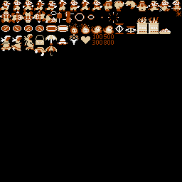
Donkey Kong Jr.
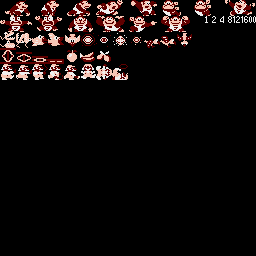
Mario Bros. (NES)
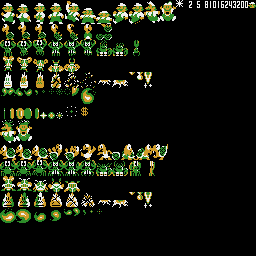
Oh Shit! (bootleg)
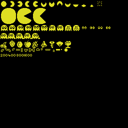
Pac-Man (NES)
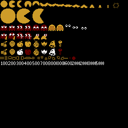
Super Mario Bros./Super Mario Bros. 2 (JP)/All Night Nippon Super Mario Bros.
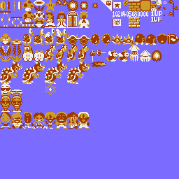
Super Mario Bros./1990 Super Mario 4 (bootleg)/Sonic Bros (bootleg)
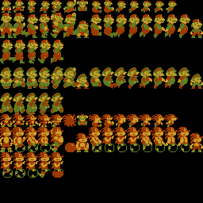
Brother Adventure (bootleg)
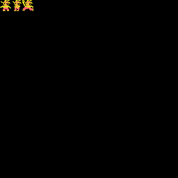
Super Mario Bros. 2 (US)
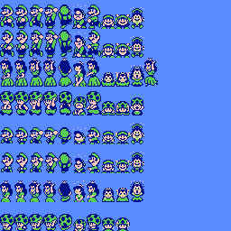
Super Boy (bootleg)
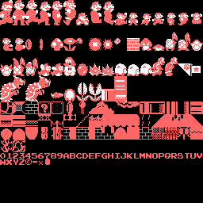
Super Mario Land
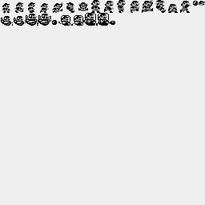
Sesame Street: Big Bird's Hide & Speak
Various
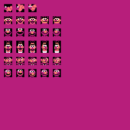
Bert
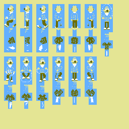
Elmo
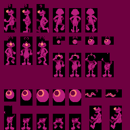
Ernie
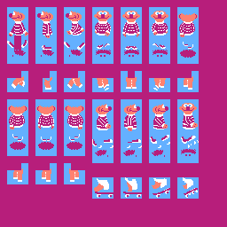
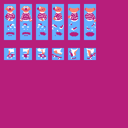
Grover
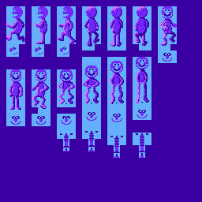
Big Bird (title screen)
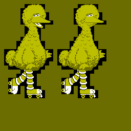
Big Bird
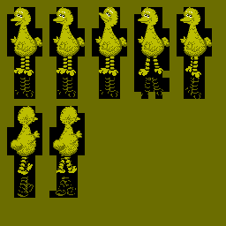
The Count
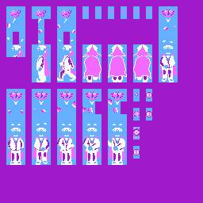
Ms. Pac-Man (NES, Tengen)
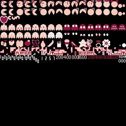
Pac-Man (Game Boy)
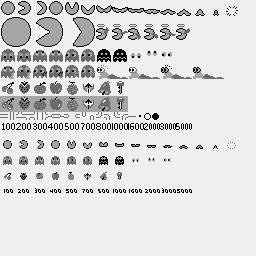
Super Mario World
Mario
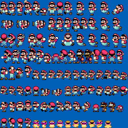
Yoshi
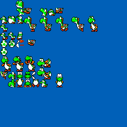
Super Bros. World 1/Super Bio Man 1/Super Bio Man 4 (bootleg)
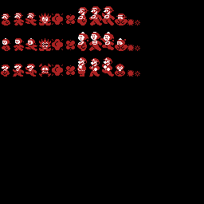
Yoshi (NES)
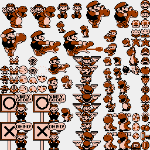
Yoshi (Game Boy)
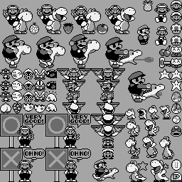
Mario Paint
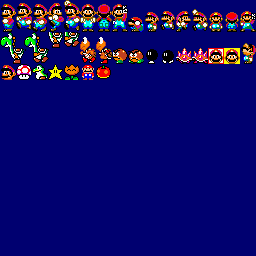
Super Mario Land 2: 6 Golden Coins
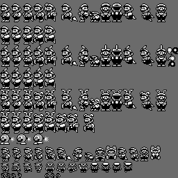
Super Boy 4 (bootleg)
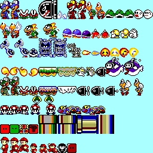
Super Mario All-Stars
Various
Koopa Troopas
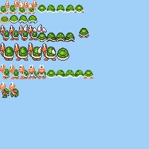
Power-Ups
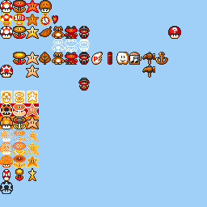
Super Mario Bros.
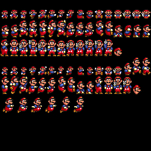
Super Mario Bros. 2
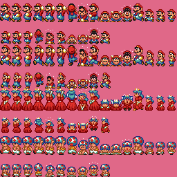
Early Designs
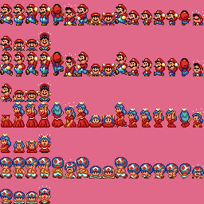
Super Mario Bros. 3
Mario (1)
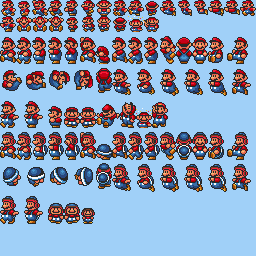
Mario (2)
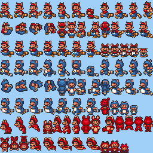
HUD
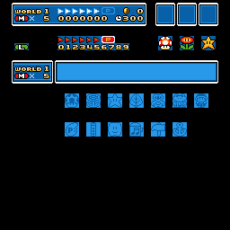
Mario's Early Years
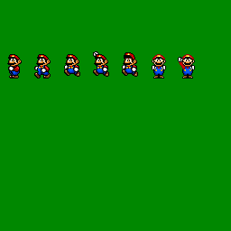
Mario & Wario

Ms. Pac-Man (NES, Namco)
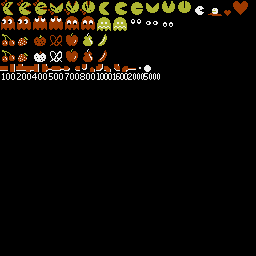
Pac-Man 2: The New Adventures
Pac-Man
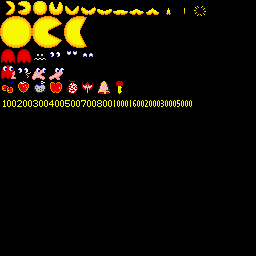
Ms. Pac-Man
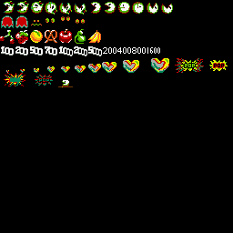
Super Mario World (Famicom bootleg)
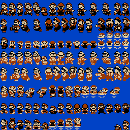
Super Mario World (Genesis bootleg)
Mario & Luigi
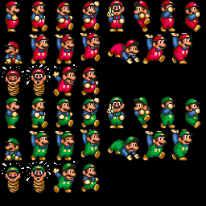
Enemies

Sonic the Hedgehog (SNES bootleg)
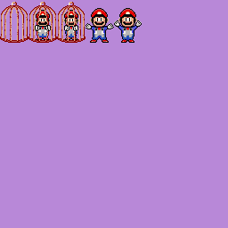
Super Mario 4 (bootleg)
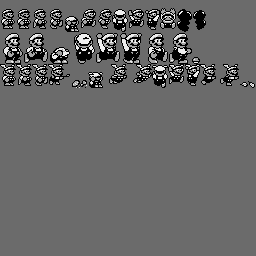
Super Mario Bros. 2 (Genesis bootleg)/Sonic Jam 6 (bootleg)
Mario & Luigi
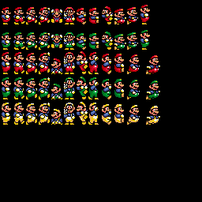
Sonic
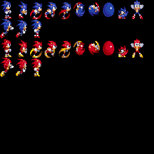
Super Mario Bros. Deluxe
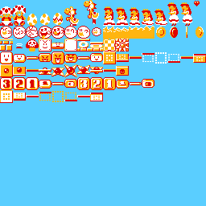
Super Mario Special 3 (bootleg)
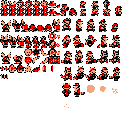
Super Mario Advance
Mario & Luigi
Peach & Toad
Mario Bros. (GBA)
Super Mario World: Super Mario Advance 2
Super Mario Advance 4: Super Mario Bros. 3
Mario Clock
Mario 3: Around the World (bootleg)
Mario
Luigi